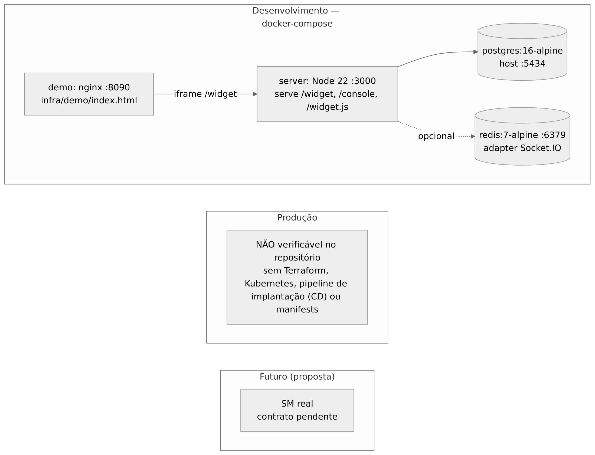

Ambientes
Somente o que é verificável no repositório (Dockerfile, docker-compose.yml, docker-compose.hml.yml, .env.example, apps/server/src/config.ts).
Desenvolvimento / demonstração — verificável
docker-compose.yml define quatro serviços: postgres (16-alpine, porta do host 5434), redis (7-alpine, 6379), server (porta 3000, healthcheck em /health) e demo (nginx, 8090, serve infra/demo). Diagrama: infrastructure.
Dockerfile: node:22-bookworm-slim, corepack com pnpm 12.15.0, pnpm install --frozen-lockfile, pnpm build (que também gera o apps/internal), NODE_ENV=production, porta 3000, CMD pnpm --filter @viavoip/server start.
O Compose usa credenciais de banco de desenvolvimento e SEED=true. Não as use fora do ambiente local.
O servidor serve três apps estáticos: /widget/, /console/ e /chat/ (o chat interno, apps/internal, build em apps/internal/dist), com redirect de /chat, /console e /widget para a versão com barra. O /chat/ depende só do build do próprio app: sem ele, widget e console continuam servidos e /chat/ responde 404. O /chat/ roda com dados simulados no navegador e ainda não fala com o servidor.
Variáveis de ambiente (apenas nomes e padrões)
| Variável | Obrig. | Padrão / efeito |
|---|---|---|
DATABASE_URL |
sim | Conexão do papel webchat_app |
MIGRATE_DATABASE_URL |
sim | Papel que aplica migrations e seed |
SM_ADAPTER |
sim | Só mock; outro valor aborta a subida |
LOGIN_RATE_LIMIT_SECRET |
sim | Segredo aleatório compartilhado entre todas as réplicas; HMAC das chaves de login |
REDIS_URL |
não | Vazio desliga o adapter do Socket.IO. Obrigatório quando REPLICAS é maior que 1 |
REPLICAS |
não | 1. Acima de 1, o boot exige REDIS_URL |
SESSION_REVOKE_SWEEP_MS |
não | 10000. Fora de teste, valor acima de 15000 impede o boot. A varredura cai para 2s se o LISTEN ou o Redis ficam indisponíveis |
PORT / HOST |
não | 3000 / 0.0.0.0 |
SEED |
não | true carrega infra/seed/seed.sql |
SESSION_TTL_HOURS |
não | 12 |
LOGIN_LIMIT, RATE_WINDOW_MS |
não | 20 tentativas de login por conta/IP em 60000 ms; contador persistido no Postgres |
SESSION_CREATE_LIMIT, MESSAGE_LIMIT |
não | 1000 por janela, em memória por processo |
PRESENCE_STALE_MS |
não | 45000 |
CORS_ORIGINS |
não | http://localhost:3000,http://127.0.0.1:3000 |
SERVE_STATIC |
não | Ligado; false desliga servir widget, console e o chat interno em /chat/ (ausente do .env.example) |
LOG |
não | false desliga o logger (ausente do .env.example) |
Integração contínua (CI)
O workflow .github/workflows/ci.yml roda em todo pull request e em todo push na main. Ele não implanta nada. Um push novo no mesmo pull request cancela a execução anterior.
O job verify usa ubuntu-latest, Node 22 e o pnpm da chave packageManager do package.json raiz. Os passos são, nesta ordem: pnpm install --frozen-lockfile, pnpm typecheck, pnpm build, docker pull de postgres:16-alpine e redis:7-alpine, e pnpm test.
O workflow não declara services: nem variáveis de ambiente. A suíte do servidor sobe o PostgreSQL e o Redis por Testcontainers. O verify cobre também typecheck, build e Vitest do apps/internal, pelo -r.
O job internal roda em paralelo ao verify, no mesmo ubuntu-latest com Node 22 e pnpm. Os passos são: pnpm install --frozen-lockfile, build do @viavoip/internal-domain (o app o resolve pelo dist), lint do @viavoip/internal e do @viavoip/internal-domain (ESLint), o gate de hex, instalação do Chromium do Playwright (--with-deps, com cache de ~/.cache/ms-playwright por hash do pnpm-lock.yaml) e playwright test nos projects 1366, 1920, 2560 e 390, com axe. O gate de hex falha se houver cor hexadecimal em apps/internal/src fora de styles/chat.css, styles/contrast.ts e styles/contrast.test.ts. Os resultados do Playwright (apps/internal/test-results/) sobem como artefato internal-e2e quando existem, o que acontece em falha. Não há lint nos demais pacotes. O build do Dockerfile (pnpm build) constrói o @viavoip/internal-domain antes do app, pela ordem topológica do -r.
Homologação (docker-compose.hml.yml): parcialmente verificável
O arquivo docker-compose.hml.yml (nome do projeto viavoip-webchat) define três serviços:
postgres:postgres:16-alpine, volumepgdata, sem porta publicada e com healthcheckpg_isready;redis:redis:7-alpine, com healthcheckredis-cli ping;server: build local (buildcomcontext: .eargsGIT_SHAeBUILT_AT, ambos com padrãounknown), porta3010:3000,env_file: .env.hml, esperapostgreseredissaudáveis e tem healthcheck em/health.
O Dockerfile e o compose aceitam as build args GIT_SHA e BUILT_AT (padrão unknown). O servidor as expõe em GET /version. Para que o SHA fique rastreável, rode o build numa máquina que tenha o checkout git:
GIT_SHA=$(git rev-parse HEAD) BUILT_AT=$(date -u +%FT%TZ) docker compose -f docker-compose.hml.yml up -d --build
O .env.hml não está no repositório: o .gitignore ignora .env.* (só .env.example é versionado). O arquivo não define container_name, então o nome padrão do Compose v2 seria viavoip-webchat-server-1.
O que roda de fato no hml (nome do container, proxy TLS, SHA implantado) não é verificável pelo repositório.
Aviso sobre a VPS (informação do Luan, conferida na VPS; não verificável pelo repositório):
- Na VPS,
~/webchatnão é um checkout git. Ogit rev-parse HEADnão funciona lá, então oGIT_SHAprecisa ser passado explicitamente no build. - Não rode este compose na VPS antes de alinhar o nome do container atual (
viavoip-webchat-server). Como o arquivo não definecontainer_name, o Compose criariaviavoip-webchat-server-1e subiria um segundo container na porta 3010.
Produção — NÃO verificável
O repositório não contém Terraform, Kubernetes, pipeline de implantação (CD) nem manifests de implantação, e nenhum ambiente de produção do Webchat foi inspecionado. Qualquer topologia de produção é proposta futura. Antes de produção, configure o mesmo LOGIN_RATE_LIMIT_SECRET em todas as réplicas; o limite de login usa PostgreSQL compartilhado. Logout distribuído e salas multi-instância dependem de Redis adapter. A revogação de sessão usa disconnect direto, NOTIFY e varredura em lote; esses caminhos não se desligam por variável de ambiente. SESSION_CREATE_LIMIT e MESSAGE_LIMIT ainda são locais por processo. Também faltam decisões de TLS/CORS, política de backup/retenção e observabilidade.
Diagramas referenciados
